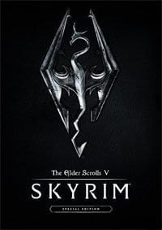

Год выпуска: 2016 г.
Жанр: RPG, 3D, 1st-Person, 3rd-Person
Разработчик: Bethesda Game Studios
Издательство: Bethesda Softworks
Платформа: PC
Тип издания: RePack
Язык интерфейса: Русский, Английский
Язык озвучки: Русский, Английский
Таблетка: Вшито (CODEX)
Описание игры:
Скайрим всегда отличался эпичностью событий – если убийство, то короля, если новая угроза – то не знающие пощады жестокие драконы. А обстановка как всегда накалена – борьба за престол окружена интригами, заговорами и прочими действиями еще при жизни правящего короля, а уж когда он убит, так все ведется в открытую – конфликты, союзы тайные и явные и т.д.
От кого может зависеть будущее империи? Кто определит дальнейшую судьбу Тамриэля? Кто имеет в своих жилах кровь существа, перед которым трепещут все? Кто обладает силой Голоса, дарующую возможность противостоять дракону? Конечно же, Вы – игрок, решивший принять участие во всем этом хаосе и только Вам под силу разобраться со всем.
Вы знаете почему Вам нужно скачать The Elder Scrolls 5 Skyrim торрент у нас с torrents-igruha.org ? А все, потому что игра обладает всевозможными наградами, количество которых достигает двух сотен – эта игровая сага собрала множество поклонников по всему миру и именно для Вас, дорогие почитатели, было выпущено издание The Elder Scrolls 5 Skyrim Legendary Edition, в котором имеется не только сам оригинал, но и дополнительные версии. Особенности SKYRIM на pc:
The Elder Scrolls 5 Skyrim – волшебный мир предлагает вам миллион возможностей, создайте своего уникального персонажа и совершайте самые немыслимые поступки – станьте вершителем истории Тамриэля, и уверяем вас, приключение останется незабываемым, насыщенным всевозможными событиями и очень интересным, ведь здесь собраны все лучшие особенности серии.
Dawnguard. Новый виток истории предполагает встречу драконорожденного с Харконом – лордом-вампиром, цели которого, конечно же, далеки от хороших. Его новый замысел – это уничтожение солнца, для чего он хочет задействовать силу Древних свитков. Примечательным становится выбор стороны – возможно, вы захотите стать борцом за справедливость и стать участником древнейшего ордена Стражей Рассвета и победить Харкона, а может вам больше по душе темная сторона – и вы сами хотите уничтожить светило? В любом случае, независимо от выбора, игра станет для вас безумно интересной.
Hearthfire. Поиграем в ферму? Этот режим отличается спокойным развитием – вам дается надел земли, где вы сможете построить дом, сначала это будет небольшая избушка, всего лишь с одной комнатой, но в дальнейшем, развиваясь – вы сможете выстроить настоящее поместье, где будут и алхимические лаборатории и оружейная и множество других построек. Инструментарий в игре позволяет создать с помощь бревен, глины и камней множество разнообразных украшений, мебель и многое другое
Dragonborn. Обратная сторона печати. Роль Драконорожденного, безусловно, величественна, но что если дать возможность пользователю стать по другую сторону? В своем путешествии по Солстейму вы повстречаете скаалов и эльфов, но главная ваша встреча будет с Драконорожденным, который станет вашим противником, а о его силе вам известно не понаслышке, так что схватка будет эпичной.